Movement Science · 6221
Module 2 — Foundations of Movement Analysis for Typical Movements
Topics: 2.1 Foundations of Movement Analysis • 2.2 Rolling & Coming to Sit • 2.3 Sit-to-Stand • 2.4 Reach and Grasp
📖 How to Use These Notes
- Best used with the lecture playing — keep these open, follow along, and add your own notes as you watch
- Lecture banners mark the start of each topic and run in the same order as the videos
- 🎙 Callouts = direct insights from the instructor's transcript
- ★ Tips = exam-relevant content or things the instructor told you to prepare
- Figures are taken directly from the module's slide decks
- Each topic ends with its own Quick-Reference Glossary
- Written from last year's recordings — if a lecture has been re-recorded or resequenced, Canvas wins
- Watch this module's lecture videos (Dr. Perry, Dr. Mallini, Dr. Footer) in your own Canvas module
- PhysioU hosts the analysis worksheets and Practice Hedman video cases — you'll use them constantly
- Modules 1 AND 2 are covered together on the quiz — study them as a pair
TOPIC 2.1
Foundations of Movement Analysis
1. Clinical Reasoning and Why Movement Analysis Matters
- Clinical reasoning — an inferential, iterative process for collecting and evaluating data to judge diagnosis and management. It starts the moment you meet the patient and evolves across the whole episode of care.
- The PT frameworks (ICF, Guide to PT Practice, patient-client management, problem-solving, HOAC II, movement system) are not sequential — they integrate fluidly. Without frameworks there's no structure, and without structure clinical reasoning stalls.
- Movement analysis = breaking an activity into component parts — anatomy, physiology, kinesiology, biomechanics, motor control, plus the contextual factors of task and environment. Observation describes how someone moves; analysis is the higher-level synthesis. Do it EARLY in the exam: it generates impairment hypotheses and drives test selection. Who needs it? Everyone — NICU to skilled nursing — ideally in the environment where the task actually happens.
2. Understanding Tasks and Skills
- Any movement has phases of preparation, execution, recovery/follow-through, and principles of stability, maximum effort, movement velocity. Skilled movement shows consistency, steadiness, speed, precise timing, economy of effort.
- Motor-control demands to identify in any task: static postural control (body at rest, stable BoS + COM), dynamic postural control (segments moving within a stable posture), transitional mobility (moving between postures — rolling, sit-to-stand), skilled movement (coordinated goal-directed movement through the environment). Task difficulty rides on degrees of freedom + attentional demands — reduce them to regress a task, add them to progress it.
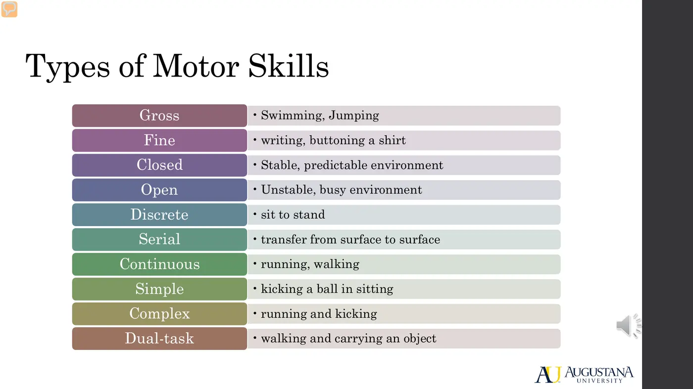
- Functional ADL categories: functional mobility skills (bed mobility — rolling, bridging, scooting, coming to sit; transfers; standing; walking and stairs — the PT home turf), basic ADLs (grooming, hygiene, feeding, dressing), instrumental ADLs (money management, socialization, community mobility, health maintenance). All sit at the activity level of the ICF.
3. Technology That Quantifies Movement
| Tool | What it measures |
|---|---|
| 3D motion analysis | Kinematics — joint angles via reflective markers/infrared (same tech as video games and film effects) |
| EMG | Muscle activation amplitude and timing — NOT strength |
| Force plates | Gold standard for forces between body and surface (sit-to-stand, gait, jumping; even walker/cane handles) |
| IMUs | Accelerometer + gyroscope + magnetometer → acceleration, angular rate, orientation; portable; F = ma can estimate force |
| Zeno walkway | Pressure-sensing mat — spatiotemporal gait parameters + center-of-pressure trajectory |
| Your iPhone | Health app: step count, double support time, walking speed, step length, walking asymmetry |
4. Screening Before Analyzing
- Screening happens while you take history and review systems — it grossly identifies problems worth full analysis. Balance screens: quiet sitting (edge of mat, no back support, arms crossed; eyes open = all three balance systems — vision, vestibular, somatosensory; eyes closed probes sensory processing), Romberg + sharpened (tandem) Romberg (feet together then tandem; 30 s eyes open + 30 s closed each; watch sway, symmetry, UE support), single-leg stance (30 s–1 min, hands on hips, compare sides), functional reach (fist at 90° shoulder flexion, reach without stepping, measure knuckle travel vs norms; lateral and seated variants).
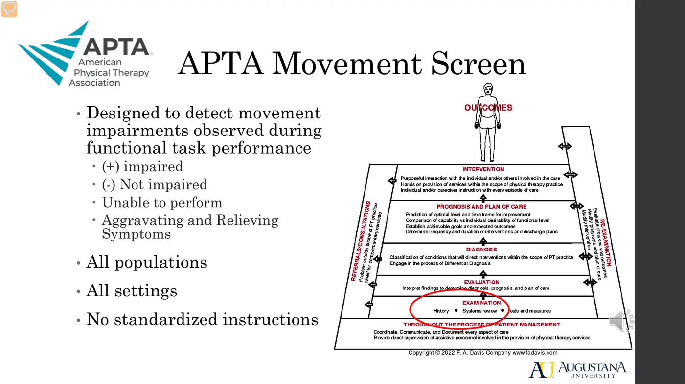
- APTA Movement Screen — transitional-mobility screen for all populations and settings: head movements, rolling, supine↔sit, squatting, mobility options, reach/grasp/manipulate. Marking an indicator “impaired” tells you which tasks deserve the full analysis. The form itself is a Canvas handout (copy in this Drive's readings).
5. The Hedman Movement Continuum — This Course's Approach
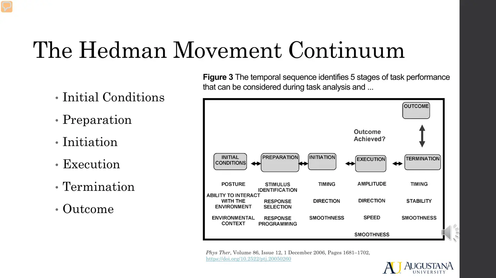
| Phase | What you're looking for |
|---|---|
| Initial conditions | Predetermined set-up (standardize it; alter it to progress/regress); includes the environment |
| Preparation | Motor planning — not directly observable; watch task understanding and response time |
| Initiation | The change that overcomes inertia — WHERE displacement begins (head, trunk, UE, pelvis, leg) |
| Execution | Intersegmental movements carrying the center of mass to its new position — comment on ROM, segment positions, forces, muscle activity |
| Termination | Deceleration of the COM into stability in the new position |
| Outcome | Was the goal achieved? You must know what success looks like for the task |
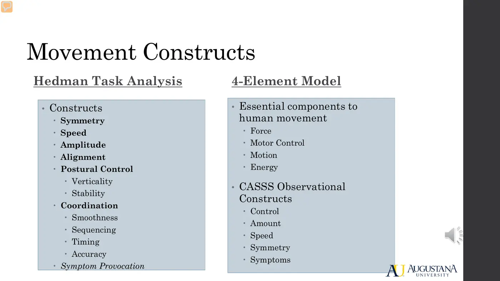
- Hedman constructs: symmetry, speed, amplitude, alignment, postural control (verticality + stability), coordination (smoothness, sequencing, timing, accuracy), and symptom provocation (pain, dyspnea, fatigue, fear, vitals — always document WHICH PHASE provokes symptoms).
- McClure 4-Element model: elements force, motor control, motion, energy; observes the whole task through CASSS — Control, Amount, Speed, Symmetry, Symptoms. Differences: McClure doesn't break the task into phases, lumps postural control with coordination, and has no alignment construct. No evidence favors either — this course uses Hedman because novices need structure.
- Documentation: task worksheets (sit-to-stand, walking, step-up, reach & grasp; generic sheet for rolling and coming to sit; separate phase-free sheets for sitting/standing postural control). Write a narrative per phase — direction, ROM, forces, muscle activation, critical events present/impaired/missing — then an overall analysis. Note any progression/regression you made, consistently.
📚 Required reading & activities — Topic 2.1
Also required: FADavis Improving Functional Outcomes in Physical Rehabilitation — Ch 1 pp. 6–10 (+ Box 1.1) and Ch 2 pp. 2–3 (+ Box 2.2); APTA Movement Screen handout. Copies are in this course's readings folder.
Topic 2.1 — Quick-Reference Glossary
| Term | Definition |
|---|---|
| Observation vs analysis | Describing movement vs synthesizing all its underlying factors |
| Static / dynamic postural control | At rest vs segments moving within a stable posture |
| Transitional mobility | Moving between postures — rolling, coming to sit, sit-to-stand |
| Degrees of freedom + attentional demands | The two levers of task difficulty |
| Dual-task | Movement + competing cognitive load — for the autonomous learning stage |
| Hedman continuum | Initial conditions → preparation → initiation → execution → termination → outcome |
| CASSS | McClure's constructs: Control, Amount, Speed, Symmetry, Symptoms |
| Symptom provocation | Construct requiring you to note WHAT and IN WHICH PHASE |
| EMG caveat | Activation amplitude/timing — never strength |
| Romberg / sharpened Romberg | Feet-together / tandem standing balance screens, EO + EC |
TOPIC 2.2
Bed Mobility: Rolling and Coming to Sit
1. Rolling: Three Basic Patterns
| Pattern | How it works |
|---|---|
| Segmental — upper body initiated | Pelvis/shoulder dissociation with trunk counter-rotation. Cervical flexion + rotation toward the target side, scapular protraction, shoulder flexion/adduction reaching across midline; upper thorax lifts, weight transfers, pelvis follows. The most common pattern |
| Segmental — lower body initiated | Two strategies: hip flexion-adduction (leg lifts and crosses midline, pelvis protracts, trunk follows) or hip extension / “half bridge” (foot planted on the surface, push down to drive the roll) |
| Nonsegmental (log roll) | Trunk moves as one unit, shoulder and pelvic girdles aligned, no counter-rotation — considered a less mature pattern |
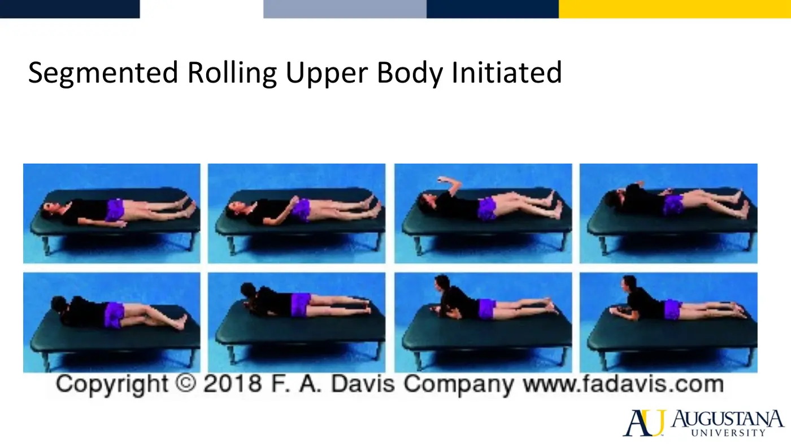
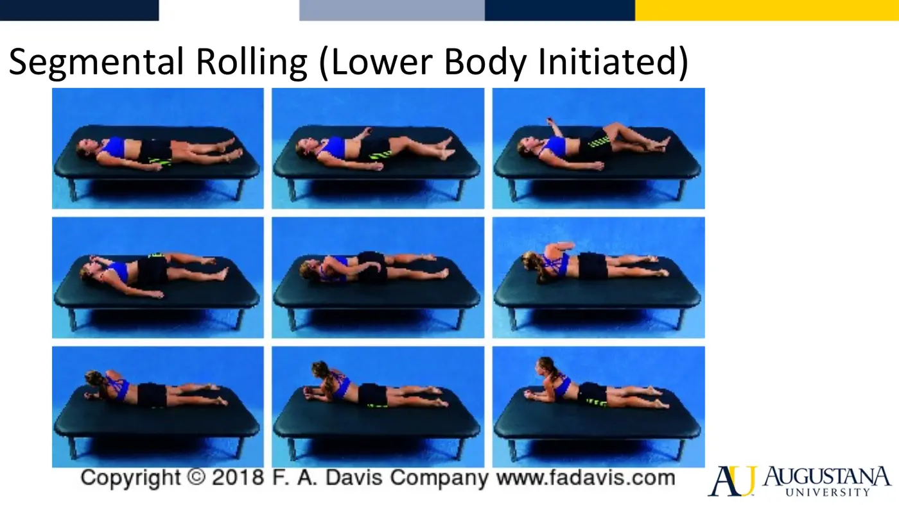
- Richter et al. (1989) — the seminal study: four patterns per body region (UE: lift-and-reach below/above shoulder level, push-and-reach, push · head & trunk: aligned/log, pelvis leads, relationship changes mid-roll, shoulder leads · LE: bilateral lift, unilateral lift, unilateral push [= half bridge], bilateral push) → 32 combinations in healthy adults. The clinical takeaway: enormous variability is typical — expect it before you call anything atypical.
2. Coming to Sit
- Three essential features regardless of strategy: generate momentum (horizontal → vertical), stability (control the COM as the base of support changes from lying to sitting), adaptability (your bed strategy ≠ floor ≠ hammock).
| Strategy | Essence |
|---|---|
| Supine → partial sit (most common in young adults) | Shoulders/elbows extend and push into the surface while neck + trunk flex → partial sit → legs swing off as the trunk pivots to the edge → short sitting. UE involvement varies |
| Side-lying, upper-trunk initiated | Head leads (cervical lateral flexion), trunk flexes/rotates/laterally flexes; push up with the arms (weight-bearing arm abducts, top arm adducts to push off); elbows extend, weight shifts hip-to-hip; reversing = eccentric elbow-extensor control |
| Side-lying, lower-trunk initiated | Lateral flexion of cervical/thoracic spine with simultaneous shoulder push-off; legs move off the surface first, driving the weight shift to the down-side hip |
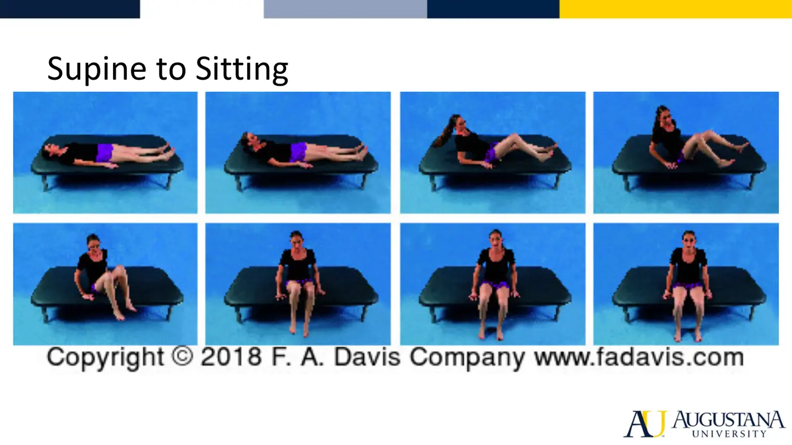
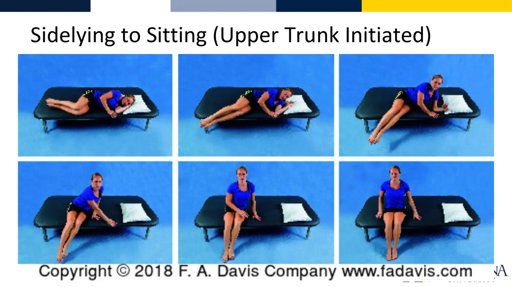
📚 Required reading & practice — Topic 2.2
- Richter et al. — Description of Adult Rolling Movements (Phys Ther 1989) (the 32-combination study)
- PhysioU — Learning Hedman: Getting Out of Bed
- PhysioU — Practice Hedman: Getting Out of Bed, 42-y/o male
- PhysioU — Practice Hedman: Getting Into Bed, 42-y/o female
- PhysioU — Practice Hedman: Getting Out of Bed, 42-y/o female
Topic 2.2 — Quick-Reference Glossary
| Term | Definition |
|---|---|
| Segmental vs nonsegmental | Pelvis-shoulder dissociation + counter-rotation vs log roll |
| Half bridge | Lower-body-initiated roll via planted-foot hip extension (= unilateral push) |
| Hip flexion-adduction strategy | Lower-body-initiated roll via leg lift across midline |
| Richter 32 | Four patterns × three body regions → 32 typical rolling combinations |
| Momentum · stability · adaptability | The three essentials of coming to sit |
| Upper- vs lower-trunk initiated | Head-and-push-up led vs legs-off-first side-lying strategies |
TOPIC 2.3
Sit-to-Stand
Part 1 of Dr. Footer's three-part series (typical movement now; atypical movement and outcome measures come later). Sit-to-stand is the most basic transfer and the foundation for all the others.
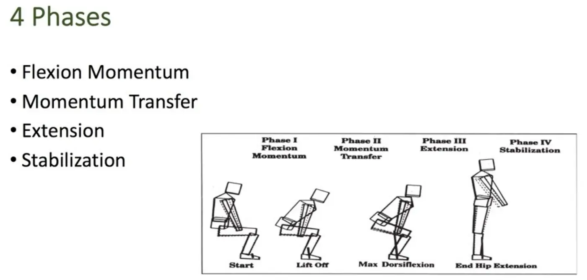
1. The Four Phases and Their Critical Events
| Phase | Window | Critical events |
|---|---|---|
| 1. Flexion momentum | Initiation → just before thighs-off | Feet placed ~10 cm behind the knees — an anticipatory postural adjustment (APA); momentum generation at the trunk, rotating about the HIP with the trunk extended (not just trunk flexion) |
| 2. Momentum transfer | Thighs-off → max ankle dorsiflexion | Continued hip flexion with ankle dorsiflexion; thighs travel forward over stable feet → anterior tibial translation; momentum passes from upper body to whole body |
| 3. Extension | Max dorsiflexion → max hip extension | Sequencing: knee extension → hip extension → ankle plantarflexion |
| 4. Stabilization | Max hip extension → stable stance | Ankle strategy — gastroc-soleus halts the movement |
2. Muscles and Kinetics
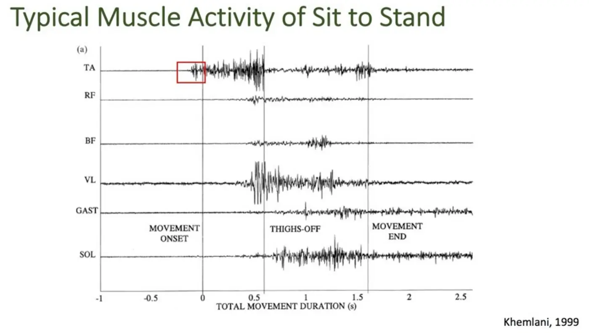
- Tibialis anterior fires first — it IS the anticipatory postural adjustment. Rectus femoris plays only a small role in flexion momentum (momentum does the work, not muscle). Vastus lateralis peaks through momentum transfer and extension; gluteus maximus and soleus drive extension (the EMG graphic omits glute max — the instructor flags this herself); TA stays on in extension to counteract soleus; gastroc-soleus terminates the movement in stabilization.
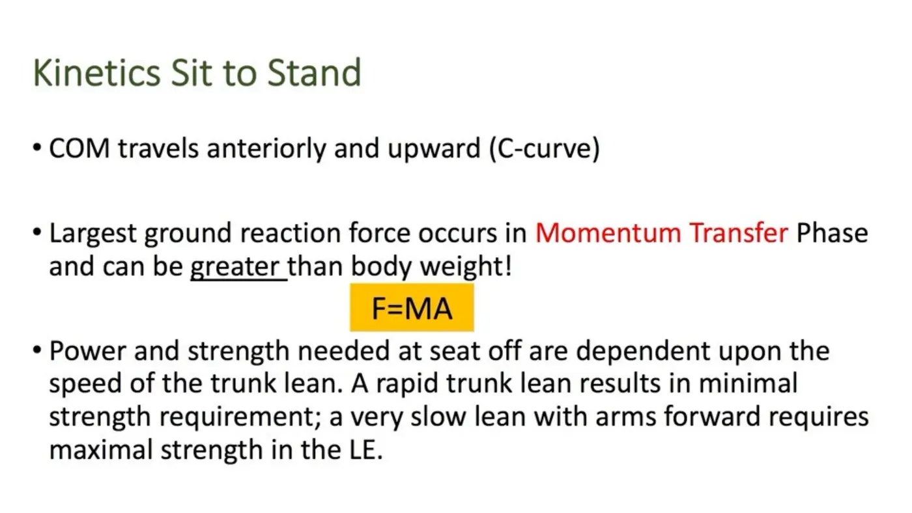
- Kinetics peak in momentum transfer: the COM travels anteriorly and upward in a C-shaped curve, and the largest ground-reaction force of the task occurs — it can exceed body weight (F = ma). The speed-strength trade-off: a fast trunk lean needs minimal LE strength; a slow lean with arms forward demands maximal LE strength. That trade-off is a treatment lever.
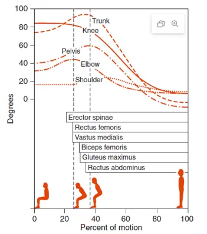
- Body structures & functions to hypothesize about, phase by phase: cognition (fear of falling early; perception/orientation to vertical in extension), ankle proprioception in every phase, TA force production and timing, gastroc-soleus extensibility and tone throughout, rectus femoris + paraspinal timing/sequencing, and the power of quadriceps, gluteus maximus, and gastroc-soleus for extension.
📱 Required practice — Topic 2.3
Topic 2.3 — Quick-Reference Glossary
| Term | Definition |
|---|---|
| Flexion momentum → momentum transfer → extension → stabilization | The four phases |
| APA | Anticipatory postural adjustment — here, feet back ~10 cm + TA firing first |
| Seat-off / thighs-off | The moment momentum transfer begins |
| C-curve | The COM's anterior-then-upward path during momentum transfer |
| Speed-strength trade-off | Fast trunk lean = low strength demand; slow lean = maximal demand |
| Extension sequencing | Knee ext → hip ext → plantarflexion, in that order |
| Ankle strategy | The stabilization phase's terminal critical event |
TOPIC 2.4
Reach and Grasp
1. The Neuroscience Under the Movement
- Motor tracts: pyramidal = fine control of hand and fingers; extrapyramidal = gross control of shoulder, forearm, trunk; cerebellar = refining the strategy. Sensory: vision supplies spatial position, distance, and precision requirements; somatosensation (proprioception + cutaneous receptors) executes and modifies.
- Feedforward defines the arm's initial state relative to the goal and pre-plans the pattern; feedback arrives at the end of movement, using somatosensory features of the object to finish accurately. Both integrate through cognition.
- Before analyzing, pin down the task: reach to grasp or reach to touch? Sitting, standing, floor? Arm supported on a surface or free in space? Each changes what you should see.
2. Three Phases (and Where the Time Goes)
| Phase | Window | What happens |
|---|---|---|
| Preparatory | Start | Visual identification — head and eyes locate the target; visuomotor channels acquire spatial info, distance, precision needs |
| Transport | ~90% of total duration | Vertical lift first, then horizontal trajectory; ends at touch. Trunk-arm dissociation is a critical event — the arm must move independently of the trunk |
| Grasp | 90–100% | Touch → full hand closure |
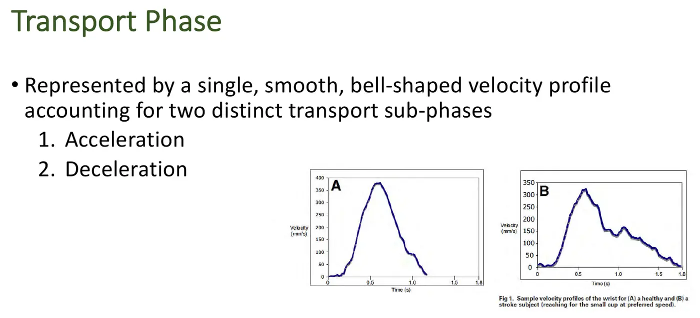
- Transport shows a single smooth bell-shaped velocity curve with acceleration and deceleration sub-phases. Post-stroke reaches deteriorate specifically in the deceleration limb — a signature worth memorizing.
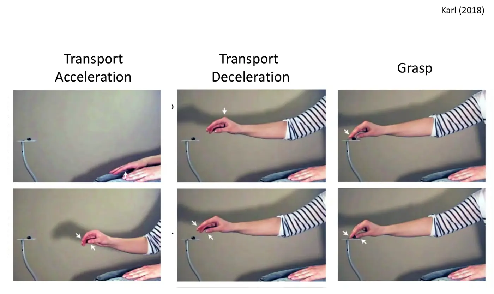
| Sub-phase | Timing | Key events + muscles |
|---|---|---|
| Acceleration — vertical | 0–20% | Arm lifts off the surface; no hand opening yet; paraspinals fire FIRST to stabilize the trunk in extension, then upper trap + anterior deltoid + biceps lift the arm (upper trap also sets the scapula) |
| Acceleration — horizontal | 20–50% | Arm moves toward the target while still rising; pre-shaping begins (20–40%) — wrist/finger extensors open the hand; anterior deltoid drives the forward motion; triceps initiates elbow extension |
| Deceleration | 50–90% | Maximum hand opening at 70–75%; hand descends and slows; anterior deltoid works eccentrically; biceps brakes the triceps' elbow extension; triceps is at its busiest for fine terminal control |
3. The Grasp Phase
- Grip formation (shaping): on arrival the hand refines to the object via somatosensory feedback — size, weight, shape (width may matter more than height), friction/texture, compliancy, orientation.
| Power grip | Precision grip |
|---|---|
| Significant force; fingers flex around the object against the palm | Small or fragile objects; fine accuracy; thumb-index, no palm |
| Cylindrical — fingers together around the object | Pad-to-pad (pinch) — a coin |
| Spherical — fingers + thumb abducted and spread | Tip-to-tip (pincer) — a needle |
| Lateral prehension — a key |
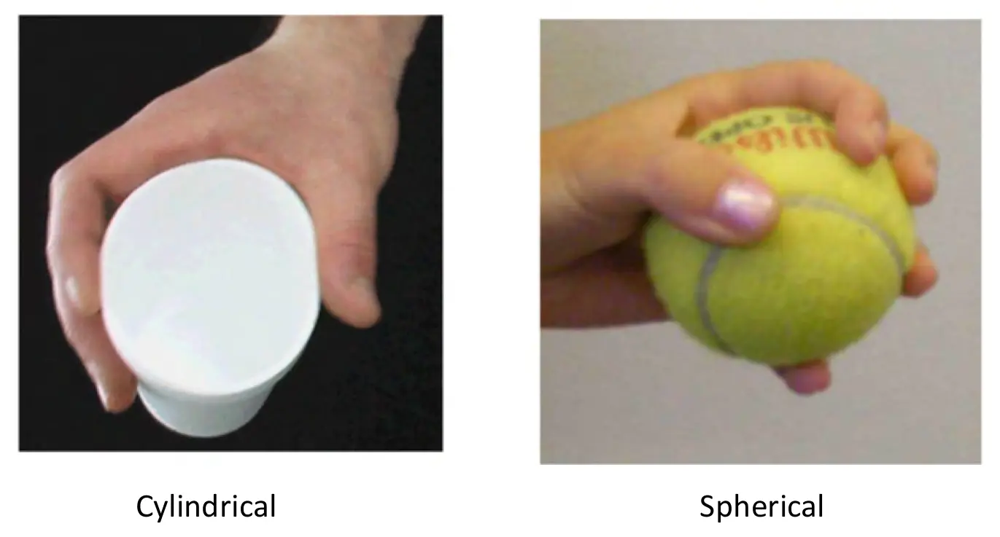
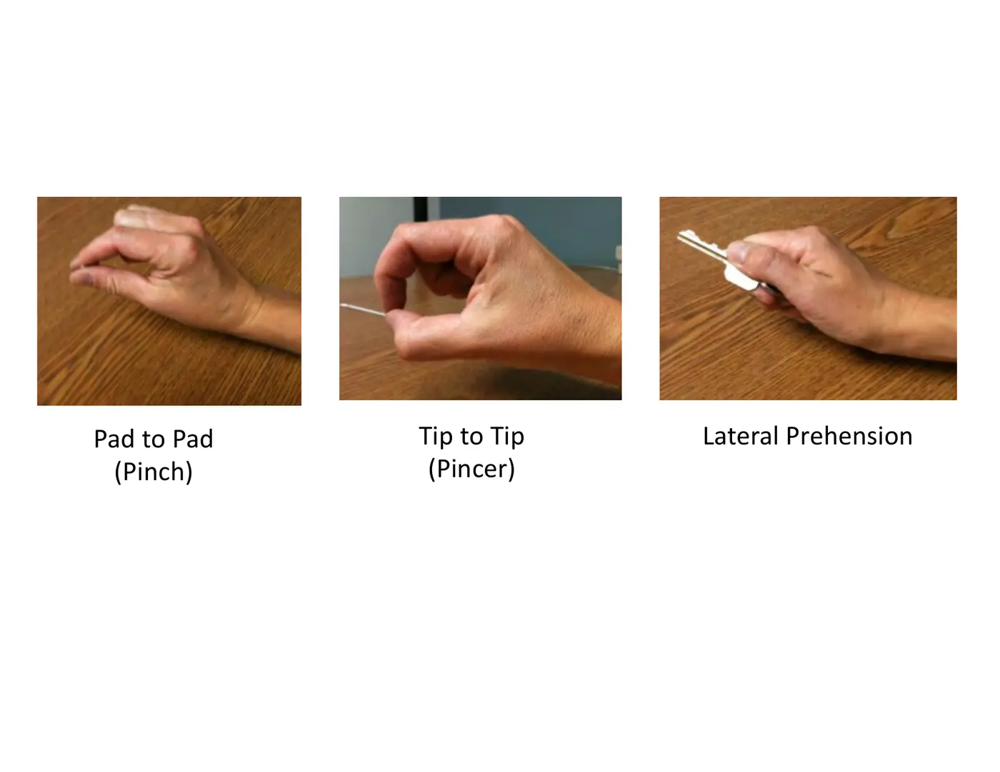
- What makes a grasp succeed: anticipatory control (vision-based pre-planning of hand shape, aperture, and force) + adaptation (somatosensory detection of force error — slip grip force — and modification for weight and texture).
- Object selection is a rehab dial — easier: large, cylindrical, stable/wide-based, rough, rigid, light. Harder: small, spherical, unstable, smooth, compliant, heavy.
★ Critical events — reach to grasp
- Preparatory: visual identification of the object (head and eyes)
- Transport: trunk-arm dissociation · pre-shaping of the hand · sufficient acceleration · sufficient deceleration
- Grasp: creation of slip grip force · modulation of grip force
📱 Required practice — Topic 2.4
Topic 2.4 — Quick-Reference Glossary
| Term | Definition |
|---|---|
| Pyramidal / extrapyramidal / cerebellar | Fine hand · gross arm-trunk · refinement |
| Feedforward vs feedback | Pre-planned pattern vs end-of-movement somatosensory correction |
| Transport phase | ~90% of the task; vertical lift then horizontal travel; bell-shaped velocity |
| Trunk-arm dissociation | Critical event: the arm moves independent of the trunk |
| Pre-shaping | Hand opening in flight (starts 20–40%; max aperture 70–75%) |
| Power vs precision grip | Palm-involved force (cylindrical, spherical) vs thumb-finger accuracy (pinch, pincer, lateral prehension) |
| Slip grip force | The force error you detect and correct to keep an object from slipping |
| Anticipatory control vs adaptation | Vision-based pre-planning vs somatosensory in-grasp correction |
SYNC SESSION
Group Movement Analysis Practice
Finish ALL async material before the sync session. The class analyzes videos together — rolling variants (hip extension/half bridge, hip flexion-adduction, upper trunk, log roll), coming-to-sit variants, sit-to-stand from multiple camera angles, and reach-and-grasp with different objects (ball, coin, cup, mug, teapot) — using the four movement-analysis worksheets (Rolling, Coming to Sit, Sit to Stand, Reach and Grasp). Download them from Canvas before class; they're the framework for the whole discussion.
✅ Module 2 assessments
- Quiz — Modules 1 AND 2 together (study both)
- Quiz Retake Reflection (if applicable)
- Emerging-technology assignment: research one technology that can help analyze movement